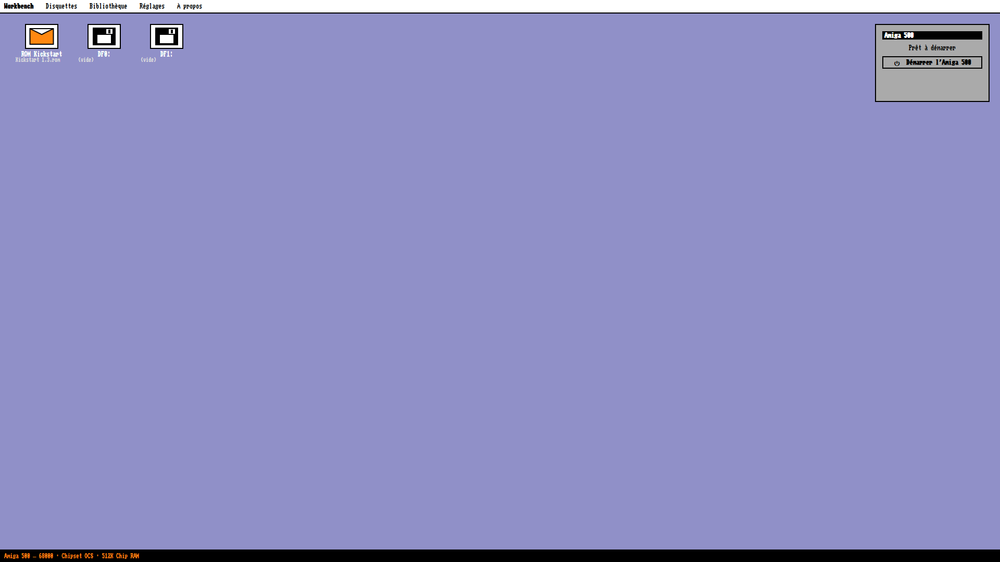

A Workbench-style front end for Windows 11, dedicated entirely to the Amiga 500. WinUAE runs hidden in the background — you only ever see the desktop and its icons.
Download How it works
68000, OCS, 512K chip RAM plus the optional 512K trapdoor. No other machine, no CPU or chipset choices.
WinUAE 6.0.3 (64-bit) ships inside. Nothing else to install.
Drop an .adf onto a drive, a .rom onto Kickstart. Recent disks are remembered.
Save named configurations with title, publisher and year. Multi-disk swap for larger games.
Screen filter (crisp or CRT), master volume, mouse or joystick on port 1 with gamepad auto-detection.
English, French, German, Spanish, Italian, Dutch, Polish, Swedish. Follows your Windows language.
Amiga 500 themed wizard. Keeps your settings, library, bios and roms folders on uninstall.
Unpack anywhere and run A500Launcher.exe. Checksums are published as SHA256SUMS with every release.
bios folder, or click the Kickstart ROM icon.roms folder, then click DF0: (and DF1: if the game needs it).Press Esc to close the launcher. In the emulator, F12 opens the WinUAE menu where you can quit back to the launcher.
No. Kickstart ROMs and disk images are copyrighted. Use only files you own legally — a dump of your own Amiga, Cloanto Amiga Forever, and so on.
It is a deliberate choice. A500 Launcher is meant to be the reference for that one machine, not a general-purpose emulator front end.
No. The launcher requires Windows 11 (build 22000 or later) and refuses to start on older systems.
No. A500 Launcher is freeware distributed as a proprietary executable. The source is not published. See the Legal page.
Translations are plain JSON files with no code. See docs/i18n.md.